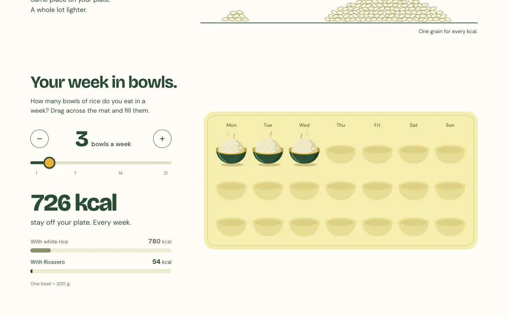

Ricezero
Illustrated D2C site that draws every kcal as a grain of rice.
D2C site for shirataki rice at 9 kcal per 100 g, for people who want to keep eating rajma chawal and biryani.
Visit ricezero.com

Design decisions
- Palette: a pale butter yellow hero, a cream page below and deep green (#294C35) for type and the one filled button. The same green and gold make up the illustrated bowl, and they come back on every bowl in the calculator.
- Type: headlines in Bricolage Grotesque at about 99px with tight tracking, body copy in DM Sans. In the comparison, '9' is set in a heavy green weight and '130' in a thin, muted olive, so the type weight itself shows which number is lighter.
- Illustration: a large steaming bowl of rice and rajma, with a side dish of onion, chilli and lemon and a few loose grains, fills the right half of the hero. A handwritten 'Your rajma's new best friend' note and arrow sit underneath it.
- Data drawn rather than charted: 'One grain for every kcal' shows a small pile of 9 grains next to a pile of 130 on a shared baseline, so the gap reads before any number does.
- Calculator: 'Your week in bowls' pairs a slider (1 to 21) and plus and minus buttons with a seven-by-three mat of faint bowl outlines. Bowls fill day by day as the count rises, and two bars compare white rice with Ricezero under a large kcal figure.
- Hierarchy: one filled green button in the hero, 'Find your pack', with 'Shop Ricezero' as an outlined button in the nav. Small lines like 'Curry approved' carry the brand voice without competing with the headline.
- Mobile: the hero stacks with copy and the button first and the bowl below it at almost full width, keeping the handwritten note and arrow.
On a phone
Ricezero has a single theme, so there is one set of captures.
The flow, step by step



Further down the page